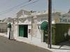
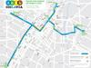
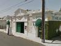

Arts And Culture
-
Get your cultural fill at 'Museums Free-For-All' weekend
1/18/13, 3:20 p.m.
For one weekend, 19 museums across the L.A. area will open their doors and have free admission.
-
City officials commend South LA theater for 15 years of service
1/15/13, 10:16 a.m.
The 24th Street Theater does much more than put on plays.
-
Late night series at the Natural History Museum combines science, live music

1/3/13, 12:19 p.m.
The monthly event dubbed First Fridays begins tomorrow at Expo Park's Natural History Museum.
-
Dinosaurs, butterflies and sleepovers; Oh my!
12/14/12, 10:46 a.m.
The Natural History Museum hosts a series of sleepovers where you can have your own nocturnal museum adventure.
-
How accurate is the portrayal of Newton in 'End of Watch'?
10/8/12, 12:33 p.m.
The cop flick is set in the LAPD's Newton Division – so we asked a sergeant who works there in real life how the movie stacks up to the reality.
-
CicLAvia's Expo Park musical line-up released
9/19/12, 10:21 a.m.
Exposition Park will serve as one of the gathering points for the upcoming CicLAvia.
-
Krump dancing and subtitled theater; this week in the arts
9/11/12, 2:18 p.m.
This week's arts and culture events happening in and around South L.A.
-
'Second home': South LA library's offerings go beyond just books
8/13/12, 3:24 p.m.
The Vernon branch of the Los Angeles Public Library is a lot more than – well, a library.
-
Lucha libre, lowriders at South LA's 'night out against crime'

8/3/12, 12:42 p.m.
National Night Out takes place next Tuesday in South L.A. as part of a country-wide effort to prevent crime and drug use.
-
Exclusive video of Phil Ranelin covering Carly Rae Jepsen's "Call Me Maybe"
7/31/12, 3:31 p.m.
Phil Ranelin performed at the Central Avenue Jazz Festival this past weekend. OnCentral joined him during one of his daily practice sessions, and he humored us with his interpretation of Carly Rae Jepsen's ubiquitous hit "Call Me Maybe."
About Us
OnCentral is a site for the neighborhoods around Central Avenue. It's a news site where we not only provide information, but put the power of storytelling in your hands. Sign up and you can share your story or help an existing story grow by adding in your perspective or corrections.
Follow OnCentral


- Most Viewed
- Most Commented